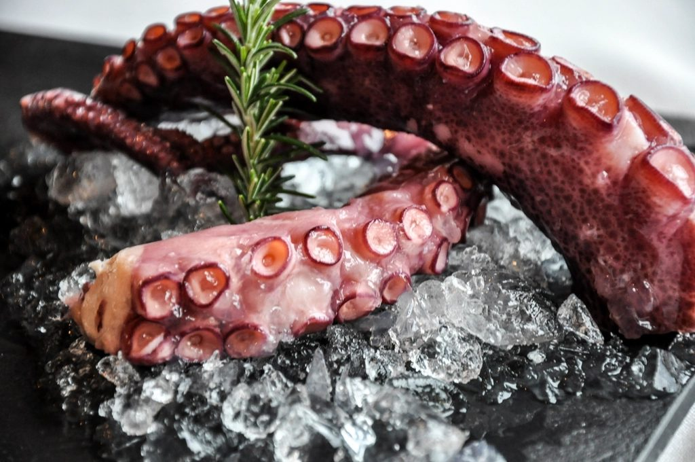

ABOUT
お店について
広島県三原市城町で、お食事処を営んでおります。地元の皆さまが気軽に立ち寄れる、あたたかい一食をご用意しています。

ウオトシという店名の響きには、魚を扱う問屋や卸しのような雰囲気を思わせるところがあります。これはあくまで店名から連想される印象であり、確かな由来として伝わっているものではありませんが、魚を大切にする気持ちはメニューづくりにも通じています。
当店は「お食事処」として、地元の方にふらりと立ち寄っていただける定食・食堂のお店です。かしこまらずに、日々の食事の延長として気軽にご利用いただける雰囲気を大切にしています。
献立の中心にあるのは、魚を使った定食です。焼き魚や煮魚、お造りなど、魚の味わいを活かしたメニューに、ごはんや汁物を添えて、あたたかい家庭的な一食をお届けしています。
これからも、三原の町で日々の食事に寄り添えるお店であり続けたいと思っています。
※営業時間・定休日・価格等の詳細は変更になる場合がございますので、最新情報はInstagramまたはお電話でご確認ください。
お電話でのお問い合わせはこちらから。最新情報はInstagramでも発信中です。